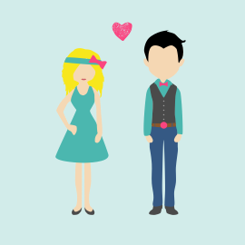
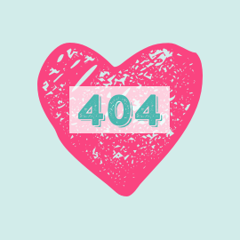

I am a UX Designer, UI Designer, problemsolver, idea creator, feedback encoder and much, much more nice job titles and Buzzwords.
I have a Bachelor of Arts in Business Psychology and a Master of Arts in Architecture. Psychology and design in combination with a never ending will to improve myself have made me a competent and passionate working bee.
Aside from work and travel I like to draw and sketch. This helps me to relax and clear my head. Some of the outcome you can find here or on my instagram account.
Currently, I live in Stuttgart, Germany, but love to travel the world. Starting summer 2016, me and my handsome husband are going to start our next adventure. After selling almost all our stuff we start to travel the world while working on projects for clients, but also on some ideas of our own.